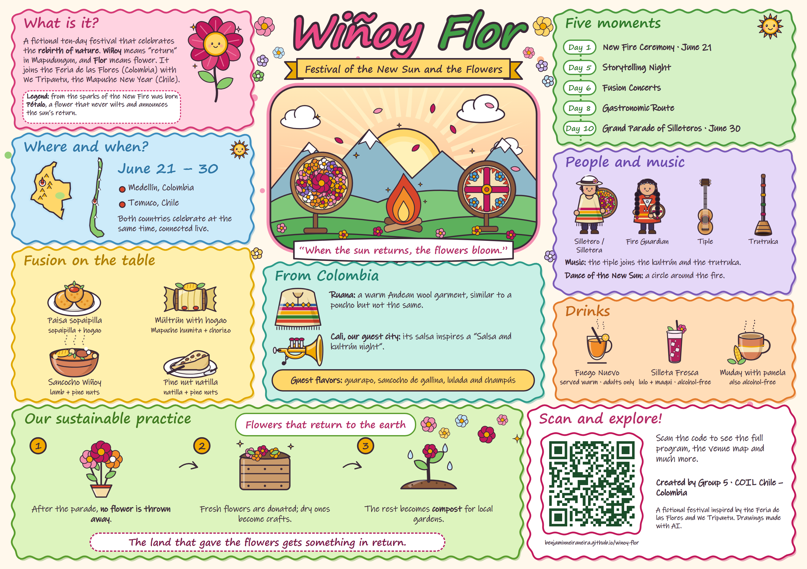

Wiñoy Flor at a glance
Our infographic summarizes the festival. Tap or click the picture to see it full size.

Download the PDF Open the picture
Created by Group 5 of the COIL project between Chile and Colombia. Drawings made with AI.
Our infographic summarizes the festival. Tap or click the picture to see it full size.

Download the PDF Open the picture
Created by Group 5 of the COIL project between Chile and Colombia. Drawings made with AI.